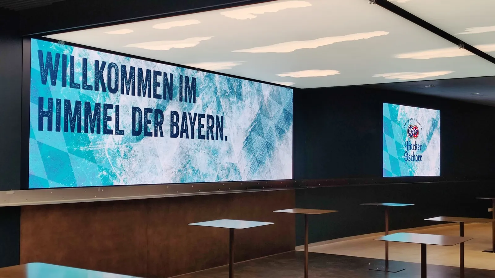
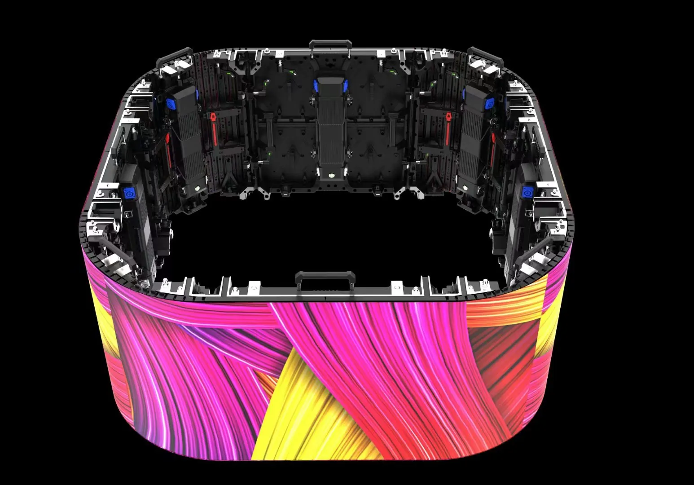
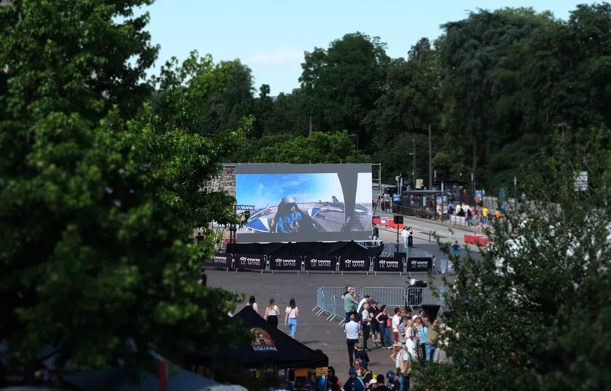

A hotel does not buy one “hospitality LED display.” It buys a set of screens that have to work in very different rooms: corridor and lift-lobby signage, restaurants and bars, ballrooms and meeting rooms, and often an outdoor facade or arrival canopy. Each zone has its own viewing distance, brightness, service constraint and content owner. Treating them as a single lobby-style feature wall is how properties overspend in one area and underspecify another.
If you are choosing the display for the main lobby itself — pitch, daytime ambient light, and corner joins — use the dedicated hotel lobby LED display guide. This article is the whole-property buying guide: how those other zones should be planned, budgeted and operated once the lobby decision is on its own page.
Hotels buy through owners, operators, brand standards and often a procurement committee, so the specification has to be defensible in writing as well as correct on site. Start with a zone plan, not a single product. List each location, the closest viewing distance, whether daylight reaches the surface, who will own the content, and how a technician will reach a failed module without closing a guest area.
Brand standards, where they exist, should be obtained before any cabinet is selected. International chains often define acceptable pitch, brightness and content refresh by zone. A screen that meets the budget but misses the brand document will be rejected at review. Serviceability belongs in the same first pass: hotels cannot close a corridor or a restaurant for scaffolding every time a module fails.
Figure 1 shows an indoor LED installation.

Corridor and lift-lobby screens exist to answer a question quickly: which way to the ballroom, which event is in which room, what time is dinner. They are read while walking, often in lower light than the main lobby, and they should not glare into guest rooms or lift cars.
Specify a moderate indoor pitch suited to a few metres, typography large enough to read at a glance, and brightness that can be dimmed for night-time corridors. Front service, or a mounting plan that does not require a lift shutdown, matters more here than a fine-pitch feature surface. A protected module face is useful in luggage routes and at lift lobbies where cases pass close to the wall. Indoor series such as M-PRO or R-PRO are a sensible starting point, sized to the available recess rather than stretched to look like a lobby centrepiece.
Restaurants, bars and cafes use screens for atmosphere, menus, and sometimes a view or a brand film. Daylight through a dining-room window, evening dimming, and a content tone that matches the room are the three decisions that matter most. A wall that looks right at lunch can be harsh at dinner if it cannot be dimmed smoothly.
LED is the better type for a large seamless feature, a bar wall, or any surface read near windows. LCD remains economical for smaller, enclosed menu boards. If both exist in the same outlet, plan one content system that can feed each format, and assign ownership to the F&B or marketing team before installation. A restaurant wall with no content calendar becomes a static poster within a month.
Ballroom and conference screens are part of the product the hotel sells to planners. They are viewed from the back of a large room, they have to hold up under event lighting, and they are photographed constantly by guests. Pitch should be set from the rear seats, not from the first row. Brightness needs margin for theatrical or banquet lighting, and the refresh rate should be high enough that phones and professional cameras do not show scan lines.
Service access is often from the front of the wall, the rear of a stage set, or both, depending on how the room is stood up for a wedding or a conference. If the room is reconfigured between events, lighter cabinets with front and rear service, such as the X Series all-platform cabinets, are easier to assemble and strike than a heavy architectural wall designed only for a fixed lobby. Meeting rooms that need a simpler daily-driver screen can use a fine-pitch indoor cabinet with an integrated controller so hotel staff can operate it without a visiting technician.
An outdoor or semi-outdoor sign is not a lobby cabinet with a higher brightness number written into the quote. It needs a weather-sealed outdoor product and enough brightness to stay readable when the sun is on the face of the sign. Service access at height, drainage, and the wind and temperature range of the site all belong in the specification.
For a facade, entrance canopy or other exposed sign, start with an outdoor series such as D-PRO (outdoor SMD, front maintenance, high brightness) or, where a COB outdoor surface is specified, COB EF (outdoor COB, 3,000 nits, fixed installation). Indoor fine-pitch cabinets, including the lobby wall, are the wrong product in these locations. Confirm the environmental rating for the actual mounting, especially under a canopy that is open to driven rain.
A property-wide LED plan fails in operations more often than it fails in the showroom. Assign content ownership before installation: marketing for brand and offer loops, events for ballroom and foyer schedules, F&B for restaurants, and engineering for uptime and spares. A short content calendar for each zone prevents the familiar outcome where every screen still shows the opening-week reel six months later.
Front-service cabinets, or access from a staff corridor, should be the default in public areas. Keep batch-matched spare modules for the main walls on site. Energy use is a genuine operating cost on screens that run many hours a day; automatic brightness control that dims with ambient light reduces both power and LED wear, which matters for properties with sustainability reporting as well as for the electricity bill.
Asia Vision's standard warranty on these series is 3 years. Production lead time is quoted per project; on the product pages the published standard delivery figure is 18 days, but structural work, brand approval and installation access usually determine the overall programme.
Figure 2 shows an indoor LED installation.

Budget planning is more useful by zone and property type than by a single screen size. A luxury property often spreads investment across the lobby (specified separately), the conference floor, public signage and the exterior. A boutique property may concentrate on one or two signature installations plus modest corridor signage. The table below uses relative tiers rather than prices, because actual cost depends on area, pitch and structural work and should be quoted per project.
Phasing is often better than trimming. Many properties complete the lobby wall first, prove the content routine, and add conference, F&B and corridor displays in a second phase. That sequence spreads capital and reduces the risk of buying screens the team is not yet ready to run. Build brand approval into the schedule as a costed step, not a formality at the end.
| Property Type | Lobby Display | Conference and Ballroom | Corridor and F&B Signage | Outdoor Sign | Relative Total Budget |
|---|---|---|---|---|---|
| Luxury, 200+ rooms | Highest tier — see the lobby guide | Highest tier | Upper tier | Upper tier | Highest overall allocation |
| Upscale, 100–200 rooms | Upper mid tier | Upper mid tier | Mid tier | Mid tier | Upper mid allocation |
| Mid-scale, 50–100 rooms | Mid tier | Mid tier | Entry to mid tier | Entry tier | Mid allocation |
| Boutique property | Upper mid tier, often the signature piece | Entry to mid tier | Entry to mid tier | Entry tier | Concentrated on signature areas |
| Resort property | Mid to upper tier | Mid tier | Mid tier | Upper tier | Weighted toward outdoor and arrival areas |
For a zone-by-zone recommendation, contact Asia Vision with the property type, the list of rooms, and any brand standard you already have. Indoor series such as CV-PRO, M-PRO and R-PRO, and outdoor series such as D-PRO, can then be matched to each location rather than forced into a single lobby specification.
Share your zone list, brand standard and programme, and we will help match indoor and outdoor series to each location.
Request a Hotel QuoteWhatsApp